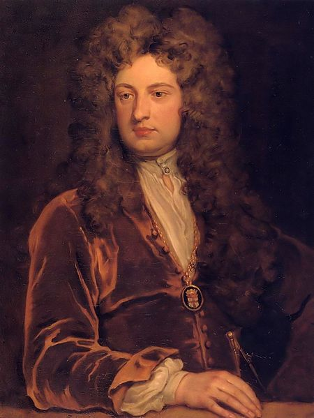

Friday, September the 2nd, 2011
back to: title, date or indexes
The first thing I did this morning, after getting up at 4.50 AM, was to find out about Sir John Vanbrugh. The real, historical Sir John Vanbrugh (1664–1726), architect of Blenheim Palace and author of The Provok'd Wife, turned out to have little in common with the Sir John Vanbrugh (dates uncertain) who appeared in the dream from which I had just awoken.
My dream-Vanbrugh was famed as a painter of chickens. He had painted a particular type of white chicken so many times that it was known as “a Vanbrugh chicken”. Connoisseurs eagerly sought out Vanbrugh chicken paintings in auction salesrooms, where they sold for tidy sums.
Wide awake now, I can still see a Vanbrugh chicken, white with a red crop, in my mind's eye.
